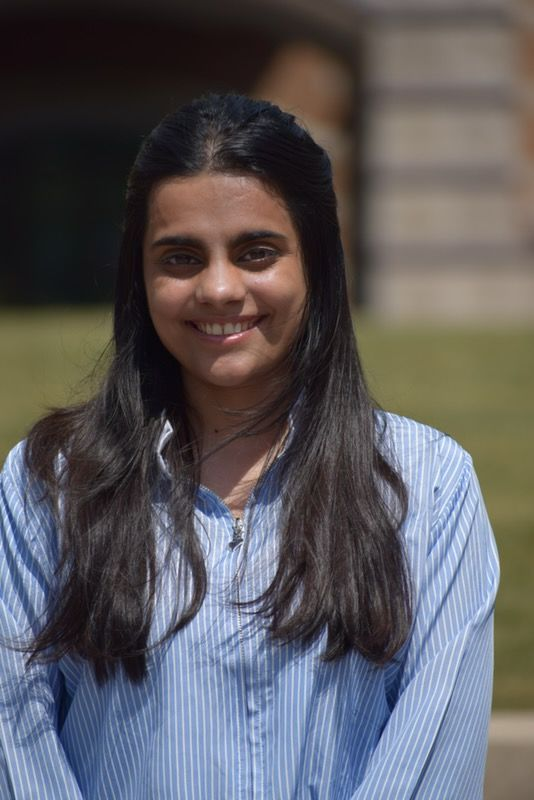

Writing Portfolio · Spring 2026
News & feature writing · Editorial development · Science communication
About

Hi, I'm Yashvi 👋
I've been reading and writing since I was little, and I've never really stopped volunteering myself into magazines, newsletters, and "we need someone to write this" moments.
I turn ideas into clear stories, interviews into engaging features, and complex topics into writing people actually enjoy reading. My work spans long-form cultural essays, public health guides for non-specialist audiences, and hands-on editorial development, taking junior drafts from raw to publishable.
If you need thoughtful storytelling, sharp edits, fresh story angles, or someone who meets deadlines without drama, I'm your person.
Selected Work
A personal essay on slowness, connection, and what train travel reveals about modern India.
"There is something oddly cinematic about Indian train journeys. Maybe it's the way conversations start with 'Seat exchange karoge?' and end with life stories."
Published in the NMIMS cultural magazine, this essay explores how long-distance rail journeys have become a site of shared identity, contrasting India's obsession with speed against the stubborn, human slowness of its trains.
A before-and-after editorial showcase: transforming a junior draft into a published piece on the Nita Mukesh Ambani Cultural Centre.
This sample demonstrates the editing process , from a serviceable but flat initial draft to a polished published article with a clear narrative voice, structural clarity, and momentum.
A practical guide translating NWS extreme heat warnings for non-technical public health staff across Illinois.
Written for local health department staff without a technical background, this guide walks through a five-step framework for reading heat alerts, identifying vulnerable populations, and coordinating response , demonstrating the ability to write clearly about technical topics for specialist-adjacent audiences.
In a world chasing speed, train trips show us that it's ok to slow down sometimes.
Skills & Experience
Clear, compelling articles across cultural, science, and community beats , built for publication with minimal copy editing needed.
Hands-on experience shaping junior drafts into polished, published work , with an eye for voice, structure, and reader engagement.
Translating technical and research-based content for non-specialist audiences, including public health and policy contexts.
Attentive to detail, consistency, and style guide adherence. Experienced reviewing and refining other writers' work on deadline.
Subject interviews for in-depth feature stories; comfortable building sources and pursuing story ideas independently.
Proven ability to meet editorial deadlines in fast-paced environments.
Social Conclave – Instagram Interview Series (Powered by the United Nations)
As part of the Social Conclave Lead Team, I conducted structured interviews with volunteers across departments to document their roles, motivations, and experiences. I then transformed these interviews into Instagram caption features for the organization's official account, crafting each piece to introduce the people behind the event in an authentic and engaging way. The goal was to humanize the organizing team and spotlight youth leadership in a professional, platform-appropriate format. For privacy and consent reasons, volunteer names and images are not publicly displayed in this portfolio; the screenshots below show the published captions as they appeared.
Logistics Lead Spotlight
Communications Volunteer Feature
Communications Volunteer Feature (Variant)